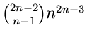

In his treatise on enumerative geometry, Schubert [Sch1] declared enumerative geometry to be concerned with all questions of the following form: How many geometric figures of a fixed type satisfy certain conditions? This includes problems as diverse as the number of lines on a cubic surface (27) and the number of lines meeting four fixed lines in 3-space (see Section 4.i for the answer). These are archetypes for two distinct classes of enumerative geometric problems. For the purpose of this survey, we ignore the first class (except in Section 3.ii) and concentrate on the second. Specifically, we consider conditions imposed by geometric figures that may be moved independently into general position.
Enumerative geometry (in the broad sense) had a great flourishing in the 19th century in the hands of Chasles, Schubert, Halphen, Zeuthen, and others. (The survey of Kleiman [Kl2] is a good historical source.) At that time, it had long been recognized that it was necessary to work over the complex numbers to ensure the existence of solutions. We know of only a handful of cases where the number of real solutions was considered. (We discuss some in Section 3.ii.) Asking how many solutions can be real is the motivating question of enumerative real algebraic geometry and an analog of Question 1.1.
For example, how many of the lines on a real cubic surface can be real? (Answer: all 27.) How many of the lines meeting four given real lines can be real? (Answer: all can.) This question was posed by Fulton [Fu2, p. 55]: ``The question of how many solutions of real equations can be real is still very much open, particularly for enumerative problems.''
This problem is fundamentally hard. Of the geometric figures satisfying real conditions, some will be real while the rest will occur in complex conjugate pairs, and the number which are real will depend subtly on the configuration of the conditions. Despite this difficulty, this is an important question often asked in applications.
One fruitful variant has been whether it is possible that all solution figures can be real. We call an enumerative problem fully real if there are general real conditions for which all solution figures are real. That is, if the upper bound of (1.2) is sharp. In light of the situation for sparse polynomial systems, it is quite surprising that there are no known enumerative problems which are not fully real. For this it is important that the conditions are imposed by general figures. A related question is whether the opposite situation can occur: Is it possible to have no (or only one) real solutions? We give some examples in Section 4.iii.e. We shall see in Section 6 that there are many enumerative problems whose number of real solutions is always at least 2.
In the above passage, Fulton [Fu2] goes on to ask: ``For example, how many of the 3264 conics tangent to five general conics can be real?'' He answered this question in the affirmative in 1986, but did not publish that result. Later, Ronga, Tognoli, and Vust [RTV] gave a careful argument that all 3264 can be real. This example is very striking, both for the number, 3264, and because this problem of conics has long been an important testing ground for ideas in enumerative geometry.
One difficulty with enumerative real algebraic geometry is that there are few techniques or theorems with a wide range of applicability. Sometimes a direct calculation suffices (Sections 3.iv and 3.v) or more commonly real solutions are constructed by deforming from a special configuration, as in the homotopy algorithm of Huber and Sturmfels in Section 2.ii.c. Attempts to formalize this method include `Schubert induction' [So8]; this is presented in the proof of Theorem 4.6, and used to establish the other results of Section 4. Another formalization is the notion of `real effective algebraic equivalence' [So2]. That (together with Theorem 4.4) gives such results as [So2, Theorem 18]: The enumerative problem of
|  |
We devote the rest of this section to a description of some enumerative
problems in the context of Question 3.1.